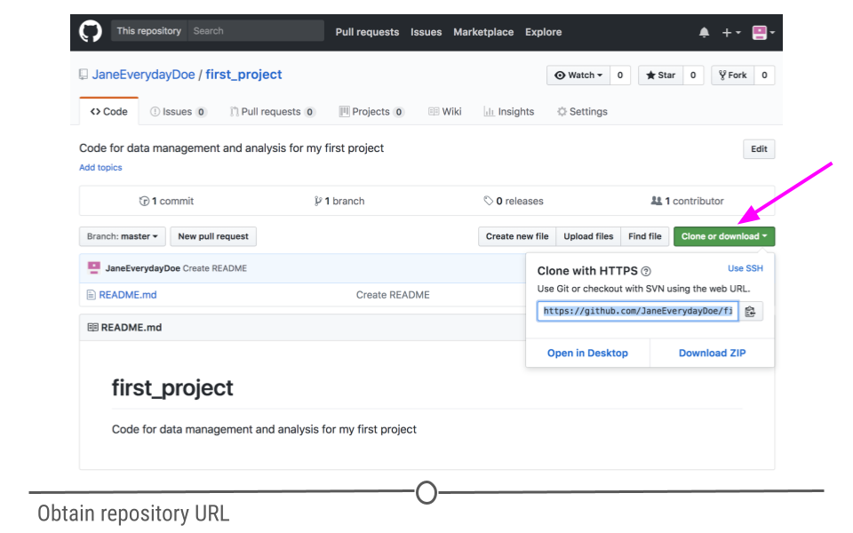
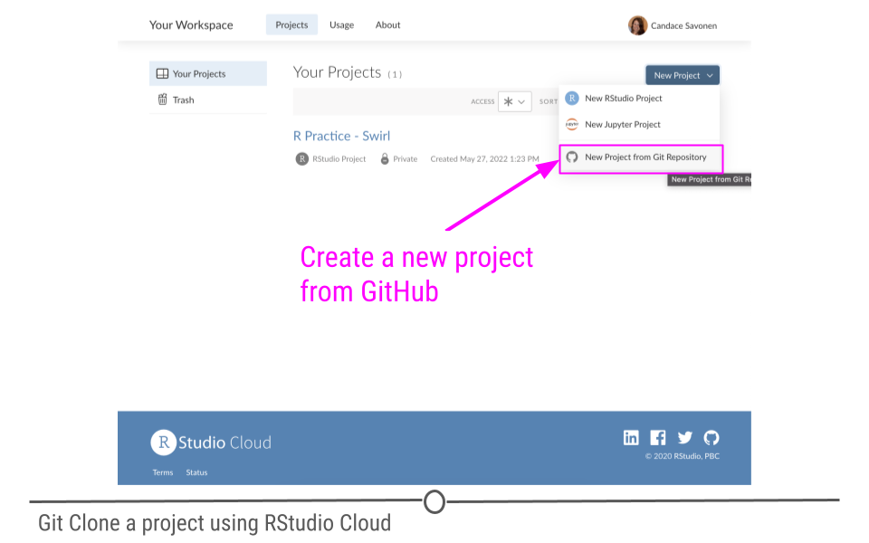
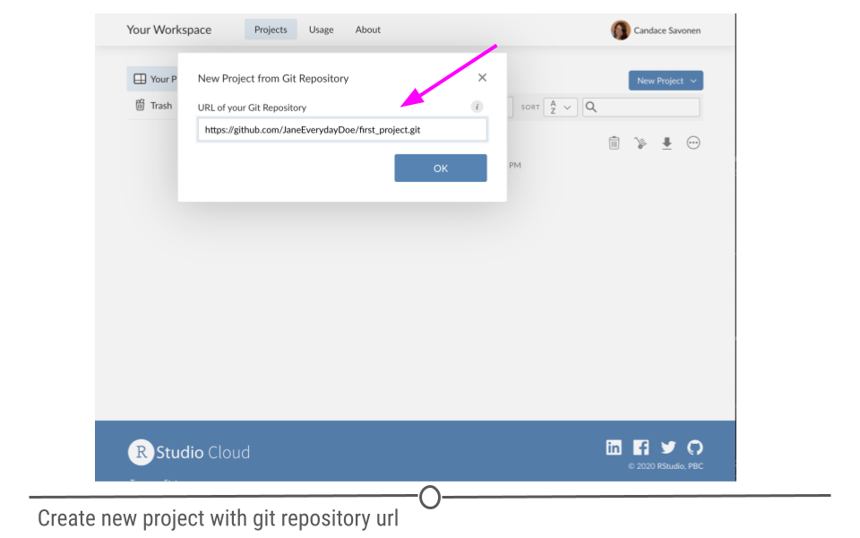
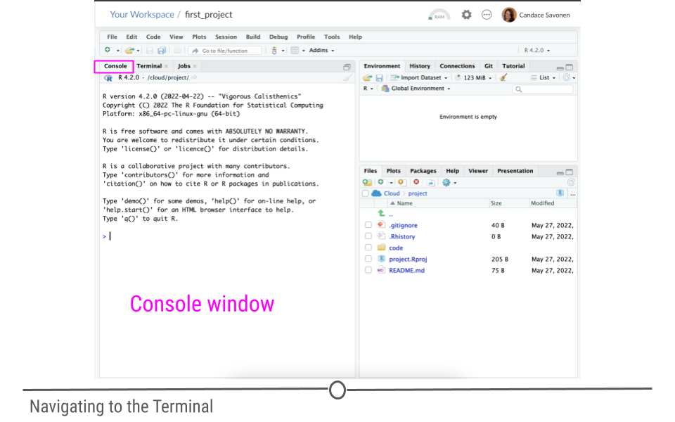
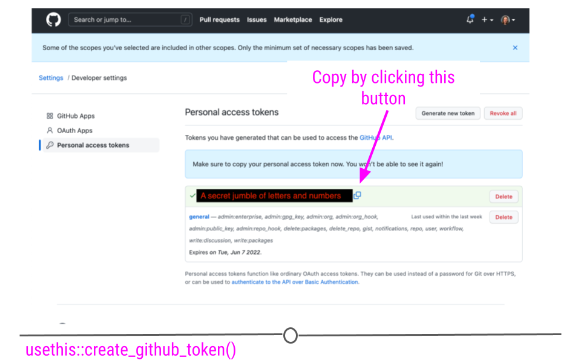
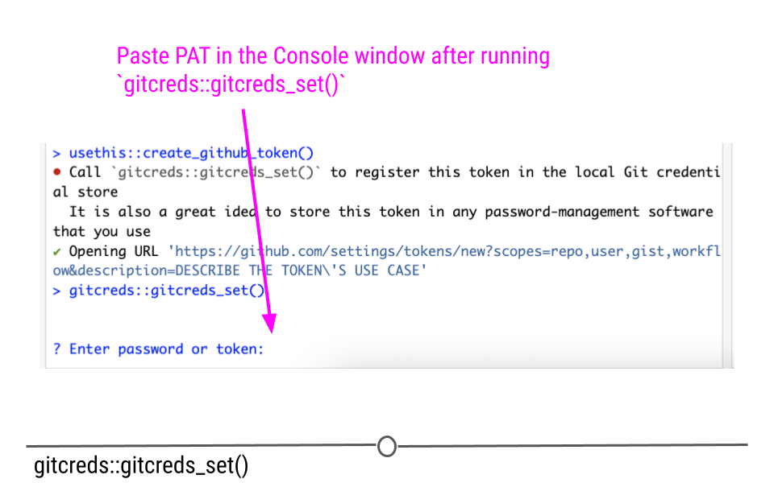
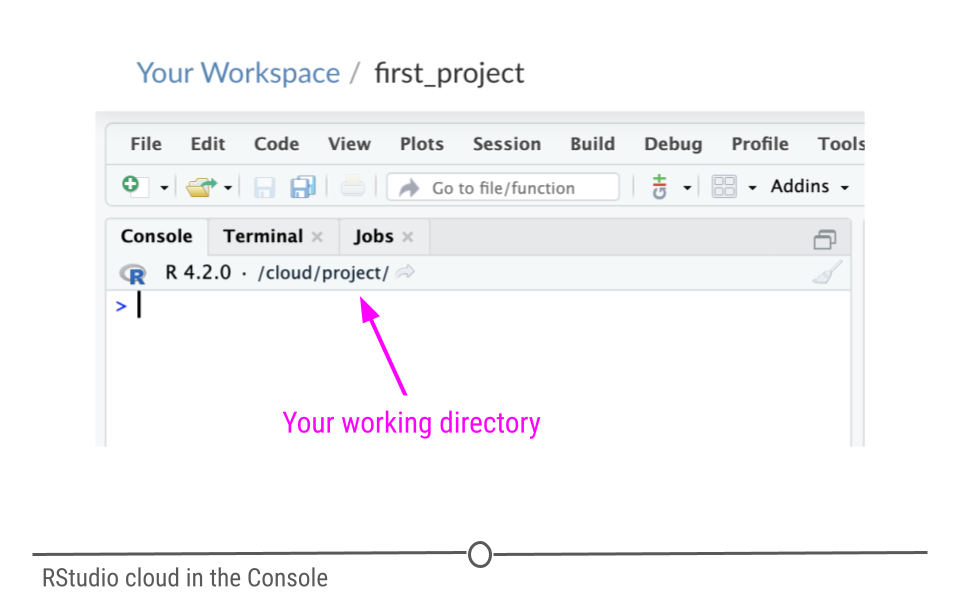

Chapter 4 Cloning A Repository
Now that you have learned how to create a GitHub repository, you will learn how to obtain a copy of that repository in a location that you use for writing code such as RStudio Cloud. This process is called “cloning” a repository from GitHub.
4.0.1 Step 1: Obtain the URL for the repository to clone
Navigate to the GitHub webpage for your repository. This URL always has the form
https://github.com/github_username/repository_nameFor example, in our last lesson, the URL for our repository is https://github.com/JaneEverydayDoe/first_project/. On this page, you will see a button on the right hand side that says “Clone or download”. When you click this, highlight the URL in the box, and copy it to the clipboard. Make sure it starts with “https” rather than “git@”. If you see “git@”, click the link in the top right corner of the box that says “Use HTTPS”.

4.0.2 Step 2: Use the RStudio interface to clone the repository
In RStudio cloud, go to your workspace by clicking the appropriate button on the left side navigation bar.
Click the New Project button and choose New Project from Git Repository

Place the URL that you copied in Step 1 in the URL of your Git Repository box, and click OK.
You will a Deploying Project progress screen, typically after a few seconds, the RStudio interface for your project will appear.

Also note that in the bottom right hand corner of RStudio, in the Files pane, you will have the files that are in your GitHub repository, now available in this RStudio cloud workspace.
4.0.3 Step 3: Set up GitHub Credentials
In order to be able to access everything in your GitHub repository from RStudio cloud, you will need to set up GitHub credentials. You should only need to do this once per project.
- In your RStudio interface, make sure that you are in the
Consoletab.

- Now use the command below to install the package
usethis. Copy and paste it in the Console window and click Enter on your keyboard. This package will help us manage our GitHub credentials from RStudio more easily.
install.packages("usethis")This will take a minute or so to install. Remember that red text doesn’t mean an error necessarily.
- Now to use this package, we need to attach its library using the following command:
library("usethis")- RStudio and GitHub require you make a special fancy password to use as credentials called a GitHub Personal Access Token (sometimes abbreviated as a “PAT”).
To create a ‘PAT’ from RStudio we can run this handy command:
usethis::create_github_token()Running this command will open up a window in your GitHub that will ask you for your password. Login to GitHub as you normally would.
This will open up a page in GitHub for creating a New personal access token.
Underneath the Note put something that reminds you what this PAT is for. Something like RStudioCloud Access. (Note that each PAT you make needs its own unique Note though).
Underneath the Select scopes section you don’t need to do anything, usethis package already chose the permissions we need.
Scroll all the way down on this page and click Generate Token. You’ve created your first PAT! Do not close this window, keep it handy for now. Note that in the image below we blocked out our PAT, but yours will show a jumble of letters and numbers

- Return back to your RStudio Cloud project while keeping your PAT handy.
In the
Consolewindow, run this command:
gitcreds::gitcreds_set()It will ask you to ? Enter password or token. Copy your PAT and paste it into the command window and press Enter.

After you enter your PAT here you should get a message like:
-> Adding new credentials...
-> Removing credetials from cache...
-> Done.You are now free to close that GitHub PAT window. Note that you will want to be very careful with your PAT. Do not share it or put it anywhere that others could see it or access it!
- Now we also need to add your username and email to the RStudio GitHub credentials by running a command like below. But replace the example username and email with what corresponds to your GitHub account.
use_git_config(user.name = "Jane", user.email = "jane@example.org")Run this in the Console tab as well and click Enter.
- Now to double check that everything is set, we can run this command to have the
usethispackage echo back our credentials:
git_sitrep()It will give you output that looks similar to this: (but note it will have your own user name, and repository name and etc.)
Git config (global)
• Name: 'Jane'
• Email: 'jane@example.org'
• Global (user-level) gitignore file: <unset>
• Vaccinated: FALSE
ℹ See `?git_vaccinate` to learn more
• Default Git protocol: 'https'
• Default initial branch name: <unset>
GitHub
• Default GitHub host: 'https://github.com'
• Personal access token for 'https://github.com': '<discovered>'
• GitHub user: 'Jane'
• Token scopes: 'gist, repo, user, workflow'
• Email(s): 'jane@example.org (primary)'
✖ Local Git user's email ('jane@example.org') doesn't appear to be registered with GitHub.
Git repo for current project
• Active usethis project: '/cloud/project'
• Default branch: 'master'
• Current local branch -> remote tracking branch:
'master' -> 'origin/master'
GitHub remote configuration
• Type = 'theirs'
• Host = 'https://github.com'
• Config supports a pull request = FALSE
• origin = 'JaneEverydayDoe/first_project' (can not push)
• upstream = <not configured>
• Desc = The only configured GitHub remote is 'origin', which
you cannot push to.
If your goal is to make a pull request, you must fork-and-clone.
`usethis::create_from_github()` can do this.
Read more about the GitHub remote configurations that usethis supports at:
'https://happygitwithr.com/common-remote-setups.html'
You should see that Name, email have your credentials set as well as a Personal access token for 'https://github.com': '<discovered>'
You can run git_sitrep() at anytime to see what your credentials and settings are.
Yay! Now you should be able to use GitHub from RStudioCloud!
4.0.4 Directory/Folder Organization
A big part of staying organized with your files is understanding how folders in your project are organized. Also important is the concept of a working directory. Whenever you are working in R or the Terminal, files are housed in some folder. This folder is called the working directory. Knowing this is important so that you know how to specify paths to other important folders in your project. We can see what the current working directory is in a number of ways. In the image below, we can see from the Terminal prompt that the working directory is /cloud/project. We can also see this in the Files pane. We see that the first level folder is cloud and that the second level folder is project.
 Congratulations! You have cloned your first repository!